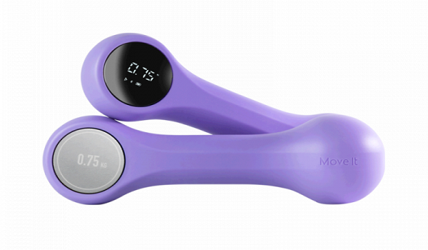

Умные гантели прекрасно справляются со своей основной задачей: они помогают поддерживать мышцы в тонусе, обеспечивают тело зарядом энергии на весь день. Для тренировок понадобится всего лишь десять минут в день. За счет своей компактности и мобильности гантели можно носить с собой и тренироваться, когда вам будет удобно.
«Умные» гантели измеряют пульс владельца, в них встроены датчики движения, которые через приложение или сигналом сообщают спортсмену об ошибках в технике выполнения упражнений. Гаджет собирает статистические данные о тренировках, помогает правильно повторять упражнения за тренером из трансляции. Разработчики считают такие гантели полноценной заменой кардиотренажёрам, с ними можно заниматься не только силовыми тренировками, но и аэробикой, растяжкой и йогой. Заряда встроенных аккумуляторов хватает на месяц. Благодаря наличию приложения для смартфона есть возможность отслеживать вашу активность в течение дня, устанавливать цели и мотивировать себя ежедневно. Программа насчитывает более тридцати танцевальных тренировок, вы сможете двигаться в свое удовольствие, при этом приводя тело в желаемую форму.
Для большей безопасности спортивный гаджет имеет прорезиненный корпус. Все собранные «умными» гантелями данные передаются на единую онлайн-платформу. Это позволяет владельцам соревноваться друг с другом даже дистанционно, что привносит в тренировку игровой элемент. Тренер получает возможность непрерывно и дистанционно наблюдать за тренировками своих клиентов, давать им персональные рекомендации, составлять индивидуальные планы работы.
Существуют гантели на платформе с регулируемым весом от 3,6 до 22,6 кг и встроенными датчиками, позволяющими анализировать в режиме реального времени ход тренировки. Управление весом осуществляется с помощью ЖК-дисплея на платформе, в которую установлена гантеля с дисковыми утяжелителями, и через приложение для iOS и Android. Выбрав вес, с которым хотите работать, устройство автоматически присоединяет/отсоединяет диски с обеих сторон гантели. Оснащена датчиками движения, гироскопом и акселерометром, отслеживающими количество повторений и подходов, время силовой тренировки, среднюю мощность и вес, с которым работали. Для того чтобы разнообразить свои силовые занятия, в приложении можно присоединиться к онлайн-тренировкам, которые проходят в определенное время либо включить готовое видео с понравившимся тренером. Компактный дизайн гантелей с платформой предоставляет возможность хранить их в любом месте дома и упрощает их транспортировку, позволяя выбирать место для тренировки - в гараже, комнате, во дворе или парке.
